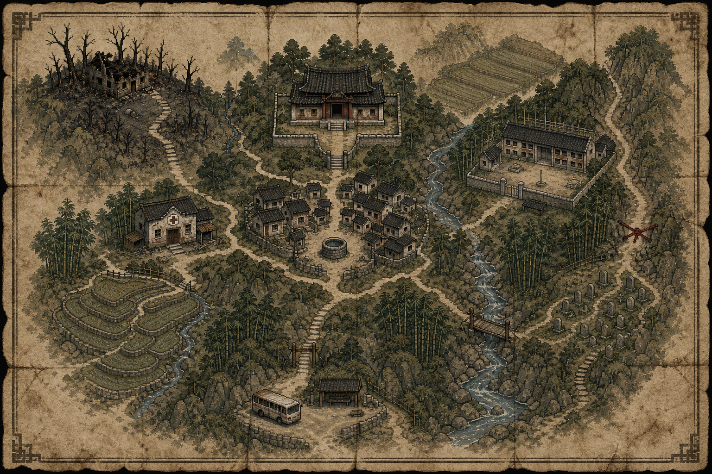
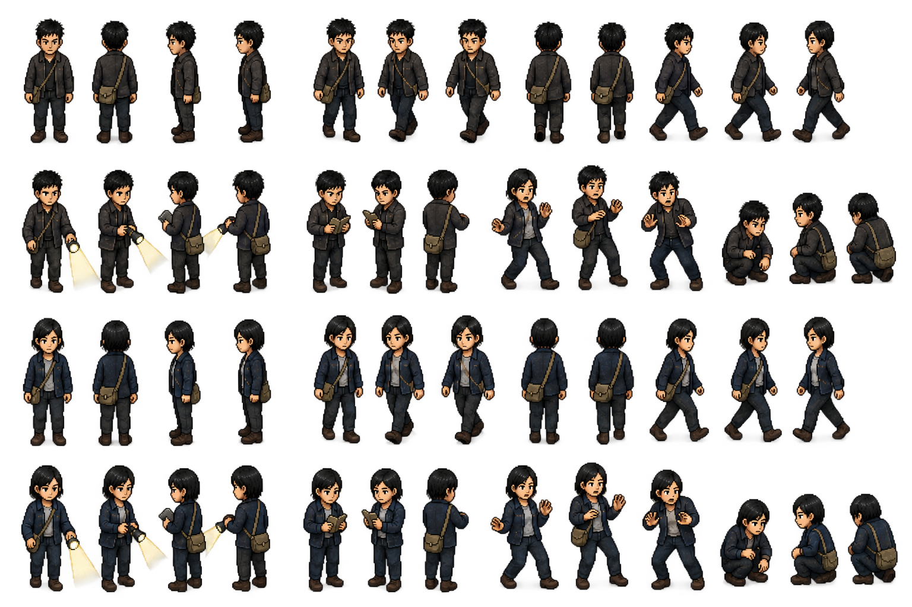
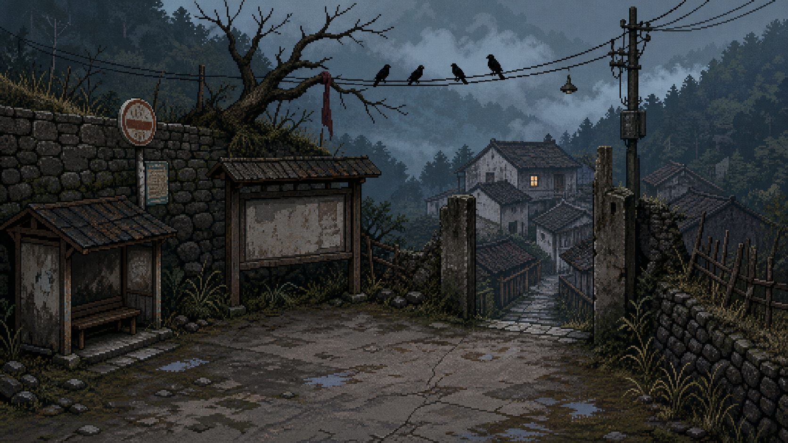
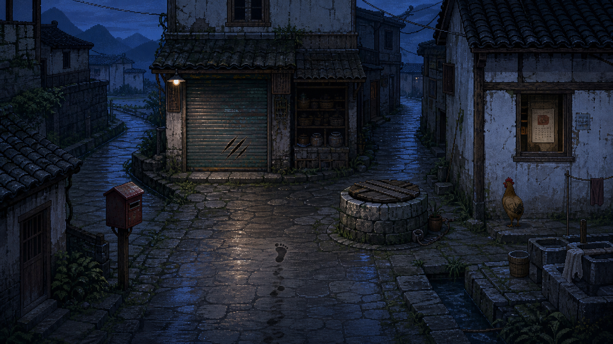
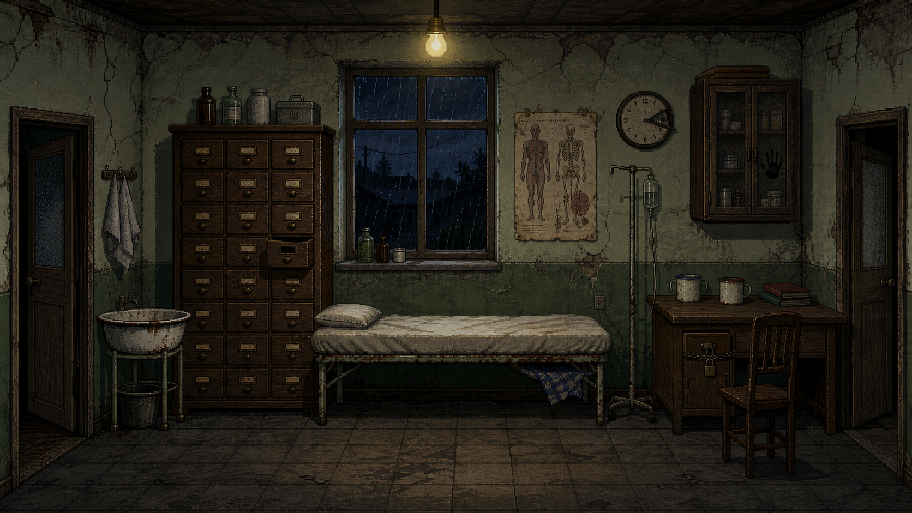
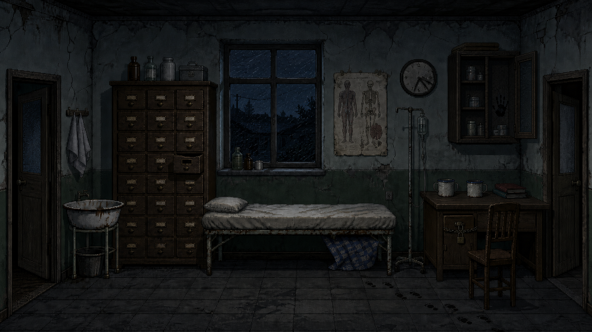
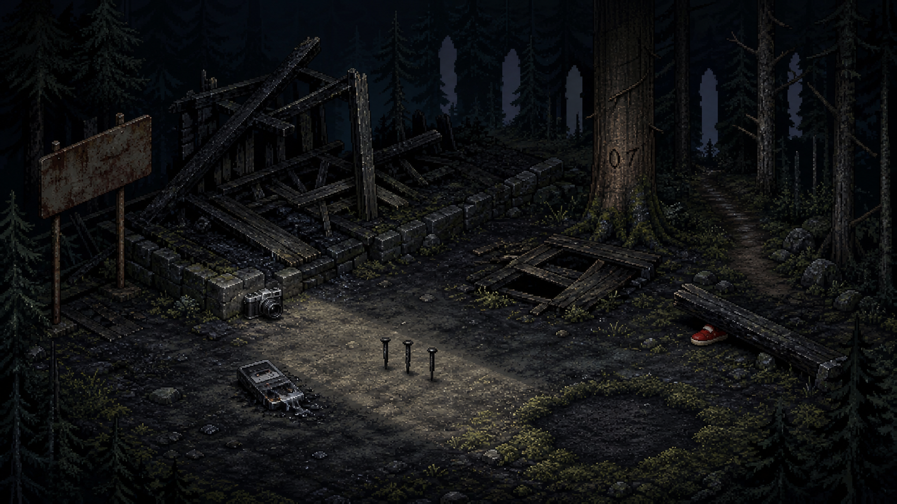

MAP
盛家村探索地图
七个节点构成完整进村路线，红线封路用于控制章节推进。
主角不再只坐在电脑前查资料，而是亲自进入盛家村。画面保持中国山区的现实质感，超现实变化只藏在物件、时间和缺失的人里。

七个节点构成完整进村路线，红线封路用于控制章节推进。

四向移动、手电、调查、受惊和蹲下；共用帆布肩包与调查动作。

空置公交站、观察玩家的鸟，以及废屋中唯一亮着的窗。

脚印突然停止，鸡始终面对墙壁，水井与旧邮箱组成第一组探索谜题。

蓝白针织毯、02:17 的钟、锁住的药柜与两只搪瓷杯。

同一房间悄悄变化：倒流的雨、重叠钟针、打开的药柜和幼童脚印。

反放牌位、族谱缺页、被剪掉的孩子、四把椅子与地板暗格。

相机、磁带机、017 树号、不落雨的地面和没有人的人形空隙。